Offline / air-gapped internal web + COG mirrorBUILT
On-prem API FastAPI + DockerBUILT
NTRO integration STAC mirror · QGIS plug-inV2
FEATURES
✓ Search any place · locate me ✓ Cloud-aware scene choice ✓ Swipe · zoom · full screen ✓ NDVI 10 m vs 2.5 m ✓ Uncertainty overlay ✓ Auto validation metrics ✓ 3-layer GeoTIFF export ✓ Upload your own GeoTIFF
skip · U(x): antialiased bicubic ×4 (the measurement's low frequencies)
→
ŷ : 10×4H×4W
2.5 m · 10 bands
Trust head · 8× dihedral TTA
σ = std of the 8 inverted outputs
conformal (v2): P( y ∈ ŷ ± q̂·σ ) ≥ 1 − α
Detail refiner · diffusion / flow (v2)
4–15 steps, predicts high-freq residual r
dial: ŷλ = ŷ + λ·r , λ ∈ [0, 1]
→

1 · FIDELITY
measured information is never altered
4× super-resolution
10 m → 2.5 m, 16× more pixels
BUILT
Low-frequency constraint
FFT layer restores the input's low band
BUILT
PSF / MTF consistency
per-band Gaussian PSF from S2 MTF spec
V2
Spectral consistency
SAM 0.48° · ΔNDVI 0.007 (measured)
BUILT
All-band reconstruction
B2–B8A, B11, B12; SWIR via fusion
BUILT
2 · DETAIL
recover what a 10 m pixel hides
Deep SR backbone
CNN + SPAN (v1) · Swin / Mamba ≤ 15 M (v2)
BUILT
Temporal attention
4–8 revisits; sub-pixel shifts add real detail
V2
High-frequency reconstruction
residual over U(x) · 1.17× edge energy
BUILT
Diffusion / flow refinement
optional residual refiner, 4–15 steps
V2
Fidelity ↔ Detail control
user dial λ blends the two outputs
V2
3 · TRUST
every pixel reports its confidence
Uncertainty estimation
per-band σ layer, exported as GeoTIFF
BUILT
TTA / ensemble
8 rotations and flips; σ = their spread
BUILT
Conformal calibration
intervals with ≥ 1 − α guaranteed coverage
V2
Hallucination detection
phantom-object audit against HR references
V2
Observed vs inferred detail
multi-date agreement map per pixel
V2
4 · INNOVATION
▸ Trust-first SR: fidelity, detail and uncertainty as separate, auditable layers ▸ Exact ONNX form of the FFT constraint: 19 MB, 9×10⁻⁷ parity, runs in any browser ▸ Sovereign & offline: no server and no foreign VHR dependency
5 · IMPLEMENTATION ROADMAP
NOW
v1 prototype
live · 5 sites
WK 1–3
Data
SEN2NAIPv2 · India refs
WK 3–6
Fine-tune
PSF loss · adaptation
WK 6–9
Temporal + refiner
fusion · λ dial
WK 8–10
Trust v2
conformal · audit
WK 10–12
Finale
task tests · QGIS
@SIH Idea submission- Template4
Sentinels_W
FEASIBILITY, IMPACT & VALIDATION
Potential challenges and risks · Strategies for overcoming these challenges
Risk
Level
Mitigation
Hallucinated detail
HIGH
FFT hard constraint + σ map; flagged, never hidden
Domain gap (US-trained)
HIGH
Fine-tune on Indian references (Cartosat, WorldStrat)
[1] Aybar et al. 2025, SEN2SR, Remote Sens. Environ. [2] Wan et al. 2024, SPAN, CVPRW [3] Liang et al. 2021, SwinIR, ICCVW [4] Wang et al. 2018, ESRGAN, ECCVW [5] Yue et al. 2023, ResShift, NeurIPS [6] Donike et al. 2025, latent-diffusion S2 SR [7] DiffFuSR 2025, arXiv 2506.11764
DATA & BENCHMARKS
[8] Deudon et al. 2020, HighRes-net [9] Aybar et al. 2024, SEN2NAIP, Sci. Data [10] Cornebise et al. 2022, WorldStrat, NeurIPS [11] MuS2 2023, Sci. Data [12] ESA OpenSR, opensr-test [13] GeoSR-Bench 2026, arXiv 2605.00310
UNCERTAINTY & TOOLS
[14] Lakshminarayanan et al. 2017, Deep ensembles [15] Wang et al. 2019, TTA uncertainty [16] Angelopoulos & Bates 2021, Conformal prediction [17] ESA, Sentinel-2 MSI user guide [18] Copernicus · Element 84 Earth Search [19] ONNX Runtime Web
Model credit: SEN2SR-Lite (ESA OpenSR, CC0-1.0) is the v1 baseline network. The pipeline, trust layer, validation, ONNX engine and web app are our own work.